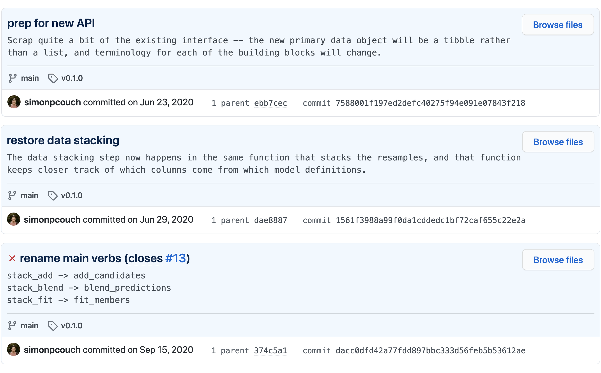

This is the first of four blog posts on the development process of the {stacks} package, excerpted from my Reed senior thesis project Tidy Model Stacking with R.
Part 2: Splitting Things Up
Part 3: Naming Things
Part 4: Big Things
In summer 2020, the prominent R programmer and organizational analytics expert Emily Riederer tweeted the following thread:
![A screenshot of a thread of tweets for Emily Riederer. The thread reads 'Type of tech talks / blog post / docs I wish were more common: developer docs of how packages actually work. e.g. how do all of the usethis scaffolding functions work? How does tune implement placeholder values?'. \ So many talks demo cool pkg features but these are more apparent from vignettes. Would love to hear more pkg devs talk about how they thought thru complexity of internal architecture, what options / tradeoffs they considered, etc. \ For ex, spent some time last year in the knitr repo and it was so fun and educational to peak under the hood and has been very helpful since in debugging and hacking around the edges.](figs/emilys_tweet.png "A screenshot of a thread of tweets for Emily Riederer. The thread reads 'Type of tech talks / blog post / docs I wish were more common: developer docs of how packages actually work. e.g. how do all of the usethis scaffolding functions work? How does tune implement placeholder values?'. \ So many talks demo cool pkg features but these are more apparent from vignettes. Would love to hear more pkg devs talk about how they thought thru complexity of internal architecture, what options / tradeoffs they considered, etc. \ For ex, spent some time last year in the knitr repo and it was so fun and educational to peak under the hood and has been very helpful since in debugging and hacking around the edges.")
When I first read it, I was struck by Riederer’s thread. (I didn’t favorite the last one, though? Shame.)
At the time, I was in the first stages of writing {stacks}. From the user’s end, I was thinking about how working with the package ought to feel, the lessons it ought to teach, and the moments for pause it ought to encourage. From my end, I was thinking about what objects would be pushed around from place to place and how the package would manipulate—and keep track of—them. The first hundred or so commits to {stacks} document a whirlwind of implementations and API shufflings (as well as very few passing continuous integration checks):

Riederer’s thread planted the seed for the thought that the work of making sense of the volatility of {stacks}’ initial interfaces may be productive. I found the thought exciting in that, for one, I may convince myself in the process that the tumultuousness of {stacks}’ initial APIs may have had some rhyme or reason to it and, additionally, that there were actually some lessons learned in the process that may be passed on to others. Developer documentation driven development, if you will!
This series of posts—excerpted from a chapter of my Reed senior thesis project—makes an attempt at Riederer’s concept of developer documentation, focusing on how some elements of {stacks} came to be. In the name of coherence (and forgetfulness), this is a somewhat revisionist history—this chapter makes linear and sensical what was often a short-sighted and goofy sequence of decisions. I don’t entirely remember what was going on in my head in those first few months of the package’s development, though journal notes, commit messages, GitHub issues, and Slack threads have helped piece together bits and pieces of those thought processes.
In the three posts that follow, to be released one per day over the next three days, I consider the following questions at length:
- Splitting Things Up: Why does making a stacked ensemble model with {stacks} require four core functions? Couldn’t there just be one?
- Naming Things: Why are those four core functions named the way they are?
- Big Things: Why did you write that so weirdly? “That,” here, will be many things.
Thoughtful answers to these questions may only scratch the surface of what one may ask of the package’s design, though I assume no one is really that interested anyway.
Some quick notes on conventions throughout these posts:
Generally, references to code in these posts follow the tidyverse style and design guides, with a few notable exceptions.
- When referring to functions as objects (or ideas), this thesis will not use parentheses. For example, I will write
fnrather thanfn(). This style follows that which the tidyverse style guide uses for other types of objects—for instance, we writeobjrather thanobj$orobj[]when referring to data structures that are subsettable with that syntax. This also allows for delineating between the function itself and calls to functions which do not require arguments. That is, in this thesis,fn()refers to the result of callingfn()rather thanfnitself. This convention was inspired by Jerry Shurman’s course Vector Calculus at Reed College as well as a forthcoming book on software engineering with Javascript by Greg Wilson. - I wrap package names in {brackets}, linking to the package website on the first usage in the series of posts. Later references will only use brackets. When referring to package ecosystems or communities surrounding a package that go by the same name as the package (such as “the tidymodels”), I will not use brackets.
A lot of the language here comes off more formally than my typical posts. These posts are mostly copy + pasted from my Reed senior thesis project, except for some formatting and style edits. I’m a little sleepy, so… so it goes.
Back to top